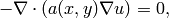
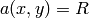
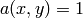
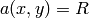
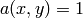
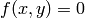

Kellogg (Elliptic)¶
Git reference: Benchmark kellogg.
The solution to this elliptic problems contains a severe singularity that poses a challenge to adaptive methods.
Equation solved:

where the parameter  is piecewise-constant,  in the first and third quadrants and 
in the remaining two quadrants.
is piecewise-constant,  in the first and third quadrants and 
in the remaining two quadrants.
Domain of interest: Square  .
.
Right-hand side: .
Boundary conditions: Dirichlet given by exact solution.
Exact solution: Quite complicated, see the code below.
// Problem constants.
const double R = 161.4476387975881; // Equation parameter.
const double TAU = 0.1; // Equation parameter.
const double RHO = M_PI/4.; // Equation parameter
const double SIGMA = -14.92256510455152; // Equation parameter
// Exact solution.
static double fn(double x, double y)
{
double theta = atan2(y,x);
if (theta < 0) theta = theta + 2.*M_PI;
double r = sqrt(x*x + y*y);
double mu;
if (theta <= M_PI/2.) {
mu = cos((M_PI/2. - SIGMA)*TAU) * cos((theta - M_PI/2. + RHO)*TAU);
}
else {
if (theta <= M_PI) {
mu = cos(RHO*TAU) * cos((theta - M_PI + SIGMA)*TAU);
}
else {
if (theta <= 3.*M_PI/2.) {
mu = cos(SIGMA*TAU) * cos((theta - M_PI - RHO)*TAU);
}
else {
mu = cos((M_PI/2. - RHO)*TAU) * cos((theta - 3.*M_PI/2. - SIGMA)*TAU);
}
}
}
return pow(r, TAU) * mu;
}
The weak forms are as follows:
// Weak forms
template<typename Real, typename Scalar>
Scalar bilinear_form_I_III(int n, double *wt, Func<Scalar> *u_ext[], Func<Real> *u, Func<Real> *v, Geom<Real> *e, ExtData<Scalar> *ext)
{
return R*int_grad_u_grad_v<Real, Scalar>(n, wt, u, v);
}
template<typename Real, typename Scalar>
Scalar bilinear_form_II_IV(int n, double *wt, Func<Scalar> *u_ext[], Func<Real> *u, Func<Real> *v, Geom<Real> *e, ExtData<Scalar> *ext)
{
return 1.*int_grad_u_grad_v<Real, Scalar>(n, wt, u, v);
}
Solution:

Final mesh (h-FEM with linear elements):

Final mesh (h-FEM with quadratic elements):

Final mesh (hp-FEM):

DOF convergence graphs:

CPU time convergence graphs: